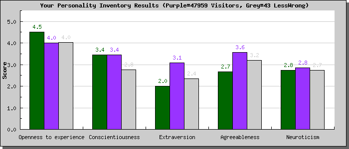

YourMorals.Org |
||||
| Home |
Logout | Explore Your Morals | About Us | Links |
| Welcome gwern0@gmail.com - logout | ||||
|
The scale you completed was the "Big 5 Personality Inventory,"
created by Oliver John at the University of California at Berkeley. This
particular scale is a "short form" of a much longer scale originally
developed by Paul Costa and Robert McCrae in the 1980s.
The scale measures your scores on five personality traits, which are sometimes said to be the "master traits" of human personality: 1. Openness to experience: High scorers are described as "Open to new experiences. You have broad interests and are very imaginative." Low scorers are described as "Down-to-earth, practical, traditional, and pretty much set in your ways." This is the sub-scale that shows the strongest relationship to politics: liberals generally score high on this trait; they like change and variety, sometimes just for the sake of change and variety. Conservatives generally score lower on this trait. (Just think about the kinds of foods likely to be served at very liberal or very conservative social events.) 2. Conscientiousness: High scorers are described as "conscientious and well organized. They have high standards and always strive to achieve their goals. They sometimes seem uptight. Low scorers are easy going, not very well organized and sometimes rather careless. They prefer not to make plans if they can help it." 3. Extraversion: High scorers are described as "Extraverted, outgoing, active, and high-spirited. You prefer to be around people most of the time." Low scorers are described as "Introverted, reserved, and serious. You prefer to be alone or with a few close friends." Extraverts are, on average, happier than introverts. 4. Agreeableness: High scorers are described as "Compassionate, good-natured, and eager to cooperate and avoid conflict." Low scorers are described as "Hardheaded, skeptical, proud, and competitive. You tend to express your anger directly." 5. Neuroticism: High scorers are described as "Sensitive, emotional, and prone to experience feelings that are upsetting." Low scorers are described as "Secure, hardy, and generally relaxed even under stressful conditions." You can remember the traits using the acronym "OCEAN" The idea behind the scale is that underneath the hundreds of personality traits that psychologists have been measuring for over a hundred years, there are really just a few dimensions of variation. For example, there are many scales out there to measure depression, anxiety, self-consciousness, and other tendencies toward experiencing frequent negative emotions. But these scales all correlate with each other, and are aspects of the Big 5 trait of Neuroticism. Psychologists in the 1960s first began to notice that the same "meta-traits" kept popping up in large studies. In the 1980s these five traits were given the names above, and this theory, the "five factor model" of personality, has become the most important model in personality psychology. It turns out that chimpanzees, dogs, pigs, and even squid can be reliably classified, based on their individual behaviors, on some or all of the five factors. Variation on these five factors seems to reflect some basic settings on which the brains of animals can vary, for example: being set for more or less social interactions (extraversion), or for more or less variety seeking (openness to experience). In the graph below, your scores are shown in green, compared to the average of all other people (in purple) who have taken the scale on our website. Scores run from 1 (lowest possible score on each trait) to 5 (highest possible score). You are a member of the group:LessWrong and those results are shown with the Grey bar.
 To learn more, you can read this Wikipedia article: http://en.wikipedia.org/wiki/Big_Five_personality_traits or read this more academic article by the creator of the test you just took: http://www.uoregon.edu/~sanjay/pubs/bigfive.pdf |
|